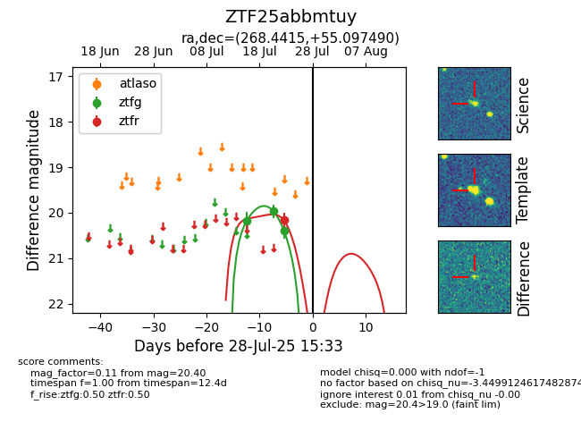

Target ZTF25abbmtuy at 2025-07-28 15:33, see:
FINK: fink-portal.org/ZTF25abbmtuy
Lasair: lasair-ztf.lsst.ac.uk/objects/ZTF25abbmtuy
ALeRCE: alerce.online/object/ZTF25abbmtuy
alt names
ZTF25abbmtuy (ztf,fink)
coordinates:
equatorial (ra, dec) = (268.4415,+55.09749)
galactic (l, b) = (83.1241,+30.05038)
photometry
last ztfg=20.40, ztfr=20.17
3 ztfg, 1 ztfr detections
